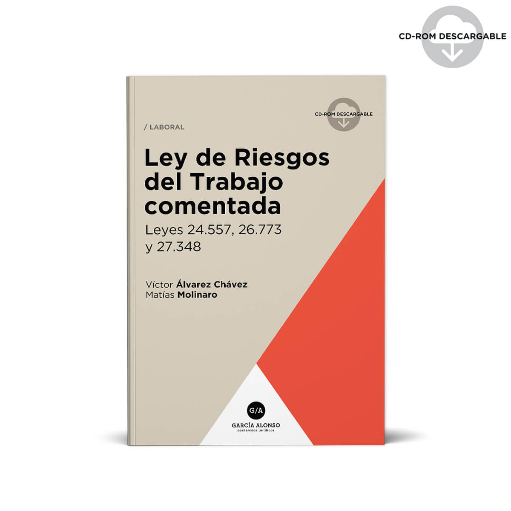

¿Que ley se aplica para higiene y seguridad?
Ley Nº19587:
Establece las características que debe reunir todo establecimiento con el fin de contar con un adecuado funcionamiento en la distribución y características de sus locales de trabajo previendo condiciones de higiene y segurida.

-Ley Nº24557:
La Superintendencia de Riesgos del Trabajo es un organismo creado por la Ley N° 24.557 que depende del Ministerio de Trabajo, Empleo y Seguridad Social de la Nación. Su objetivo primordial es garantizar el efectivo cumplimiento del derecho a la salud y seguridad de la población cuando trabaja.
